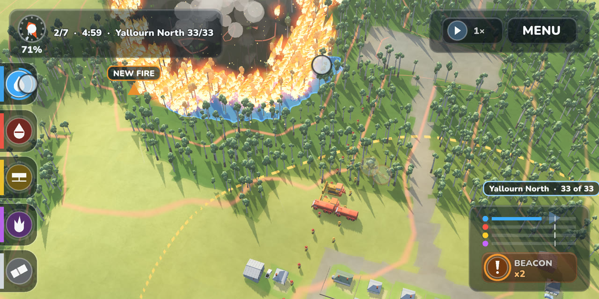
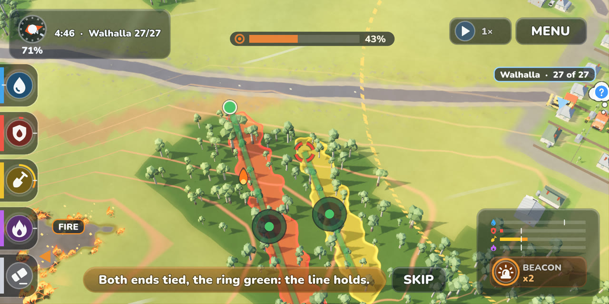
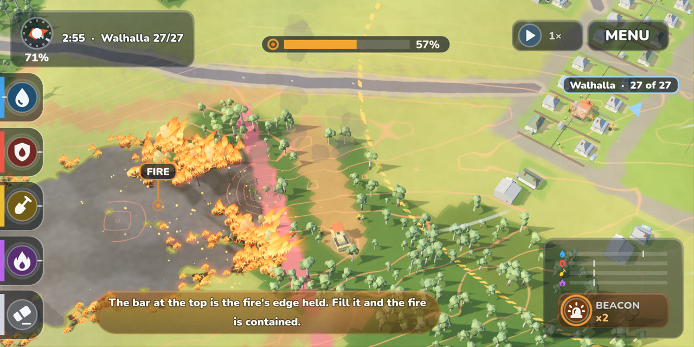
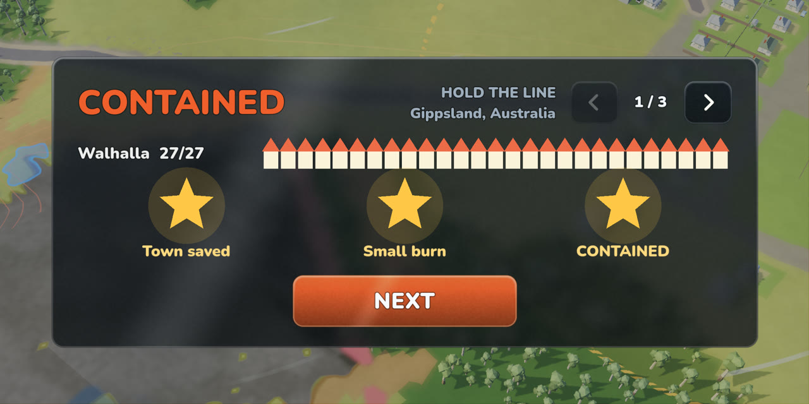

Что было не так. Пожары начинались почти у самого города. Пока осмотришься, огонь уже во дворах, и оставалось только закрашивать пламя синим и надеяться. А синее почти ничего не решало. Вертолёты сбрасывали воду, куда вы закрасили, огонь гас в одном месте и бежал дальше в соседнем, и пожар, который вы тушили с умом, заканчивался примерно так же, как пожар, на который вы в основном смотрели. Нам говорили, что непонятно, что вообще нужно делать. И это было правдой.


Как стало. Каждый пожар начинается дальше, за городом, и идёт на город. У вас есть несколько минут и одно настоящее решение: где его остановить.
- Вода по-прежнему охлаждает фланги, но голову пожара она не останавливает. Это делает только линия.
- Вы проводите линию поперёк пути огня, от преграды до преграды: дорога, река, скалы, уже выгоревшая земля. Танкеры покрывают её ретардантом, бульдозеры срезают до голой земли.
- Каждый конец линии либо привязан к преграде (зелёная точка), либо свободен (красное разорванное кольцо). Свободный конец огонь обходит.
- Линия показывает, успеет ли флот её построить, пока огонь не дошёл: зелёная — успеет, жёлтая — впритык, красная — поздно. Это видно ещё пока вы рисуете, и линию можно отодвинуть ближе к городу, чтобы дать бригадам больше времени.


- Полоса вверху показывает, какая часть кромки пожара удержана. Когда голова упёрлась в привязанную линию, флот сам добивает открытые фланги. Заполните полосу, и пожар ЛОКАЛИЗОВАН.


Звёзды. Город спасён, площадь небольшая, пожар локализован. Раньше третья звезда давалась за «потушили вовремя», и это было в основном везение. Теперь она за то, что вы правильно прочитали огонь. Проиграть пожар или сезон по-прежнему нельзя: тяжёлый пожар просто даёт меньше карт.


Первый пожар учит. Три шага: огонь и куда он идёт, пунктирная линия, которую нужно провести, и как выглядит привязанная зелёная линия. Дальше сами.
Мы проверили это ботами на 192 пожарах: один играет хорошо, второй только льёт воду на голову, третий проводит линию с непривязанными концами, четвёртый ничего не делает. Хороший игрок теперь заметно опережает остальных по звёздам (2,65 против примерно 1,9) и локализует большинство пожаров, остальные почти никогда. До этого разница была такой маленькой, что было почти всё равно, что делать.
Что дальше
- Очаги от искр. Угли летят впереди фронта и поджигают землю за вашей линией. С пятого уровня сезона.
- Смена ветра. Ветер меняется посреди пожара, и линии, верной в начале, может понадобиться вторая. Тоже с пятого уровня.
- Карта «Наблюдатель» станет сильнее, чтобы против очагов был настоящий ответ.
- Режимы графики: чтобы на слабых телефонах шло плавно, а на мощных выглядело лучше.
Напишите, где вы провели первую линию и понятны ли цвета. Это то, что нам важнее всего сделать правильно.